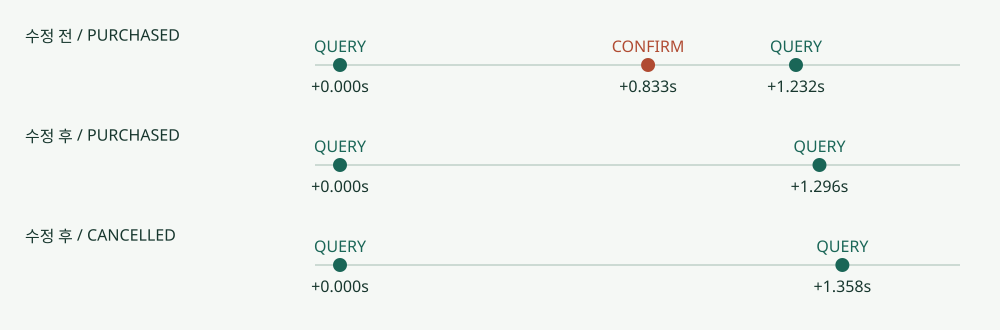

CORRECTNESS / TERMINAL RECONCILIATION
종결 거래의 재승인 결함과 외부 명령 허가 검증
모구시장은 늦은 웹훅이 도착하면 구매가 끝난 거래도 PG 조회로 다시 확인한다. 문제는 이 사후 조회가 타임아웃으로 끝났을 때, 기존 복구 코드가 완료된 거래에 승인 명령을 다시 보낼 수 있었다는 점이다. 실제 MySQL과 HTTP PG 시뮬레이터에서 정상 웹훅 수신 경로로 재현한 뒤, 상태를 조회할 수 있다는 이유만으로 외부 명령까지 허가하지 않도록 조건을 분리했다. 종결 거래는 조회를 계속하되 재승인·취소 명령을 추가로 보내지 않으며, 외부 사실이 내부 결과와 충돌하면 수동 검토 대상으로 보존한다.
PG 효과 원장만으로 발견하지 못한 중복 승인 호출
attempt.workflow는 복구 작업의 상태이고 reservation.state는 업무의 상태인데, 기존 웹훅 수신은 PURCHASED 거래도 workflow=RECONCILING으로 바꿨다. 이때 인증된 PG 조회가 타임아웃으로 UNKNOWN을 돌려주면 Recovery.work는 원래 멱등키로 CONFIRM 재시도를 요청했고, arm은 generation과 workflow만 확인해 이를 허가했다. 예약이 PAYMENT_PENDING인지와 결제 시도의 resolved_at은 검사하지 않았기 때문이다.
중복 승인 효과가 없었다는 사실만으로 앱의 실행 허가가 올바르다고 판단할 수는 없었다. 시뮬레이터의 멱등 처리 덕분에 재고 보존·구매 수·승인 효과 감사는 통과했지만 호출 원장에는 불필요한 CONFIRM이 남았다. 실제 제공자의 멱등 보관 기간이 지난 뒤에도 같은 보호를 기대할 수 없으므로, PG 호출 수와 실제 효과 수를 별도로 검사해 앱이 보내지 말아야 할 명령 자체를 차단하는지 확인했다.

수정 전에는 구매 완료 뒤 CONFIRM이 1회 더 호출됐고, PG의 중복 승인 효과는 0건이었다. 외부 명령을 허가할 때 현재 예약 상태, 결제 시도 종결 여부, 구매·취소 의사, 워커 소유권을 함께 검사하도록 수정하자, 구매 완료·취소 완료 거래의 추가 CONFIRM/CANCEL은 모두 0건이었다.
| 경로 | QUERY | 추가 CONFIRM | 추가 CANCEL | 추가 효과 |
|---|---|---|---|---|
| 수정 전 구매 | 2 | 1 | 0 | 0 |
| 수정 전 취소 | 2 | 0 | 0 | 0 |
| 수정 후 구매 | 2 | 0 | 0 | 0 |
| 수정 후 취소 | 2 | 0 | 0 | 0 |
상태·의사·소유권을 확인하는 공통 실행 허가
사용자별 중복 배정을 막는 guard, 예약 reservation, 결제 시도 attempt, 외부 명령 operation 순으로 잠근 뒤 아래 조건을 검사한다. 웹훅이 복구 workflow를 다시 열어도 예약의 종결 상태와 resolved_at은 유지된다. 이 상태를 확인해 실행 허가를 커밋한 경우에만 트랜잭션 밖에서 PG HTTP를 호출한다.
arm(claim, kind):
generation == claim.generation
lease_until > DB current time
reservation.state == PAYMENT_PENDING
attempt.resolved_at IS NULL
workflow != RESOLVED
CONFIRM: intent == CONTINUE
CANCEL: intent == CANCEL_REQUESTED && fact == APPROVED
credential scope + idempotency retention + operation not BLOCKED
persist ARMED and call count; COMMIT
then HTTP outside DB transaction작업 선점 당시의 복사본 대신 잠금 아래에서 읽은 현재 행을 검사하므로, 완료된 거래는 operation이 PREPARED로 남아 있어도 QUERY만 수행한다. 다만 이 수정으로 이전 워커가 이미 허가받거나 전송한 HTTP를 철회할 수는 없으므로, 그런 요청에는 여전히 고정 외부 멱등키와 PG의 종결 상태 계약이 필요하다.
실행 허가를 판단할 때는 operation 행 잠금을 기다리는 동안 lease가 만료될 수도 있다. 따라서 최초 읽기에서 lease가 유효했더라도 ARMED를 쓰는 UPDATE에서 현재 DB 시각으로 다시 검사하도록 하고, 이 경계를 시험했다. MySQL에서 lease를 400ms로 두고 행 잠금을 550ms 유지했을 때, 유효한 재선점 이전의 외부 호출은 0건이었고 재선점 뒤에는 정상 구매로 확정됐다. 이 검사는 허가 쓰기 시점에 적용되며 커밋 뒤 중단됐거나 이미 전송된 HTTP까지 철회하지는 않는다. 커밋 직전 슬롯 검사의 잠금 경계 · 최종 고정 코드의 종결 회귀
내부 종결 상태와 PG 조회 결과의 충돌 처리
인증된 PG 응답도 paymentKey·orderId·금액·통화·상점·수단을 검증한다. PURCHASED/APPROVED에 CANCELED가 오거나 CANCELLED/CANCELED_FINAL에 DONE이 오면 기존 예약·재고·의사·종결 시각을 유지한 채 충돌 관측을 저장하고, POST_TERMINAL_FACT_CONFLICT 사유의 REVIEW로 전환한다. 이후 일치하는 응답이 오더라도 운영자의 확인이 필요한 충돌은 자동 해제하지 않으며 재승인·취소 명령도 보내지 않는다.
조회 결과 UNKNOWN만으로 종결 사실이 바뀌지는 않으므로, 완료된 거래에는 외부 명령을 재허가하지 않고 제한된 워커와 조회 backoff로 재확인한다. 장기 불명은 REVIEW에 남되 종결한 결제 시도의 pending 슬롯을 다시 점유하지 않는다. 아직 PAYMENT_PENDING이고 구매 의사가 CONTINUE인 거래의 동일 키 승인 복구, 승인 확인 후 수락한 CANCEL 요청을 이행하는 경로는 유지했다.
종결 충돌의 영속 보존
워커 직접 선점과 커밋 직전 슬롯 검사 구현에서는 검토 사유가 덮이는 별도 결함이 있었다. 구매 완료→인증된 CANCELED→거래 결합 정보가 틀린 응답→프로세스 재기동→원래 구매와 일치하는 DONE 순서로 조회하자, 중간 오류가 review_reason을 덮으면서 마지막 DONE에서는 충돌이 없다고 판단해 REVIEW가 해제됐다. 앞서 실행한 단순한 ‘충돌→일치’ 시험에는 중간 오류와 재기동이 없어 이 결함을 발견하지 못했다. 워커 직접 선점 수정 전 원장 · 커밋 직전 예산 검사 수정 전 원장
| 순서 | 수정 전 workflow / 사유 | 수정 후 workflow / 수동 사유 |
|---|---|---|
| 인증 CANCELED 충돌 | REVIEW POST_TERMINAL_FACT_CONFLICT | REVIEW POST_TERMINAL_FACT_CONFLICT |
| 다음 조회 결합 정보 오류 | REVIEW OBSERVATION_BINDING_OR_CONTRACT | REVIEW POST_TERMINAL_FACT_CONFLICT |
| 재기동·일치 DONE·운영 재조회 | RESOLVED OBSERVATION_BINDING_OR_CONTRACT | REVIEW POST_TERMINAL_FACT_CONFLICT |
| 구분 | QUERY | CONFIRM | CANCEL | 예약 업무 상태 |
|---|---|---|---|---|
| 수정 전 | 4 | 0 | 0 | PURCHASED |
| 수정 후 | 4 | 0 | 0 | PURCHASED |
수동 판단이 필요한 충돌은 마지막 조회 오류와 별도로 보존해야 했다. 그래서 V6 마이그레이션에서 첫 충돌을 review_hold_reason/at/fact에 저장하도록 하고, 보류 사유·DB 기록 시각·당시 외부 사실을 일반 오류 설명과 분리했다. review(), 일치 응답 반영, 운영 재조회, finish 모두 이 필드를 확인하므로 이후 DONE이 관측돼도 충돌을 해소한 것으로 처리하지 않는다. 자동 해제 API는 제공하지 않는다.
review_hold_reason = COALESCE(review_hold_reason,
'POST_TERMINAL_FACT_CONFLICT')
review_hold_at = COALESCE(review_hold_at, DB current time)
review_hold_fact = COALESCE(review_hold_fact, observed fact)
workflow = REVIEW
GET /ops/reviews/ATTEMPT_ID # X-Ops-Token required
# held reason/time/fact, current intent/fact, latest 100 observations운영 조회 API에서는 보류 사유와 함께, 일치하는 PG 응답과 잘못된 거래 결합 정보를 모두 관측 원장에서 확인할 수 있다. 이 과정에서 구매·재고 상태는 유지됐으며 종결 이후 추가 CONFIRM/CANCEL도 0건이었다. 다만 마이그레이션으로 옮길 수 있는 것은 기존 행에 남아 있는 충돌 사유뿐이다. 과거 행의 hold_at은 이관 시각으로 기록하고 원래 충돌 사실을 복원할 수 없는 hold_fact는 null로 두었으며, 새 충돌부터 시각과 사실을 함께 저장한다. 이미 덮여 사라진 사유는 이 마이그레이션으로 복원할 수 없다. 수정 후 오류·재기동·일치 조회와 운영 조회 · 공통 정확성 회귀 결과
소수부 절삭으로 발생한 KRW 금액 검증 오류
기존 Number.longValue()가 소수부를 버리기 때문에, 1,000원 주문에 totalAmount=1000.9를 주어도 구매가 확정됐고, 전액 취소 응답에 balanceAmount=0.9를 주어도 재고를 반환했다. 독립 PG 효과 감사만으로는 통과할 수 있는 잘못된 응답 수용이었다.
| 응답 | 수정 전 | 수정 후 |
|---|---|---|
| DONE, totalAmount 1000.9 | PURCHASED | PAYMENT_PENDING 유지, 잘못된 관측 REVIEW |
| CANCELED, balanceAmount 0.9 | CANCELLED, 재고 반환 | PAYMENT_PENDING 유지, 반환 없음 |
| 정상 totalAmount 1000 / 잔액 0 | 정상 경로 | 검증 후 구매 / 전액 취소·반환 |
금액 비교만 엄격하게 바꿔서는 부족하며 JSON 파싱부터 소수 정밀도를 보존해야 한다. Double로 읽는 단계에서 정밀도를 잃으면 이후 exact 비교로 복구할 수 없으므로, Jackson의 USE_BIG_DECIMAL_FOR_FLOATS로 Map의 소수를 읽고 new BigDecimal(value.toString()).longValueExact() == expected로 KRW 계약의 숫자형·정수·범위를 함께 검사한다. 이에 따라 수치상 정수인 1000.0은 허용하지만 1000.9·0.9·범위 초과·문자열·NaN은 거절한다. 같은 검사를 승인 금액·취소 잔액·클라이언트 결제 금액에 적용했다.
잘못된 응답을 받은 시점의 앱 상태·재고와 정상 응답을 복원한 뒤의 처리 결과를 비교하고, 독립 PG 호출·효과 원장도 함께 확인했다. 금액 파싱과 정수 변환은 JDK 21의 longValueExact 계약과 실제 의존성 Jackson 2.21.4의 숫자 파싱 설정을 기준으로 검증했다.
경계 시험과 적용 범위
정상 HTTP 웹훅을 수신함에 저장한 뒤 PG QUERY에 지연을 주입하고, 회복 후 새 QUERY가 수신됐는지와 복구 workflow가 종결됐는지를 함께 확인했다. 첫 시험은 회복을 기다리는 조건이 부족했으므로 회복 뒤 새 조회까지 기다리도록 관찰 조건을 보완했다. 수정 후 구매·취소 종결 충돌, 미종결 승인 복구, ARMED 이후 수락한 취소, 만료 lease와 교체된 generation의 추가 외부 명령 0건을 검증했다. 실행한 테스트 · 독립 감사 · 기존 거래 회귀 · 실패 경계 회귀
정확성 수정은 단일 재고 행 기준과 기존 5개 성능 비교군에 공통 적용했고, 카운터 행 분리·관측 통합·커밋 직전 슬롯 검사 구현에도 반영했다. 이 결과는 로컬 HTTP PG의 장애 재현이다. 실제 테스트 카드 인증·앱 구매·취소·알림 재전송은 별도의 소수 거래로 확인했고, 실제 발신자 서명 검증은 미완료다.